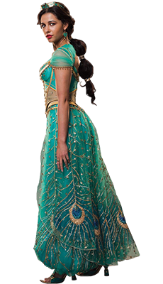

본문컨텐츠영역
CHARACTERS
- ALADDIN
- An impoverished but kind-hearted Agrabah thief and street urchin who is in love with Princess Jasmine. Massoud said that Aladdin "sees a future for himself that's greater than what's been set out for him at the present moment. He doesn't know exactly what it is or how he's going to get there, but he knows it is out there," and felt the character is very selfless and usually does things for other people, but as he falls in love he loses himself a little bit and starts to become someone that he's not. But he's a good person with good intentions and has good people surrounding him who lead him back to where he's supposed to be."

- JASMINE
- The Sultan's daughter and the feisty princess of Agrabah who wants to have a say in how she lives her life and falls in love with Aladdin. Scott said that the character "will be strong and have fun, but also get it wrong and be emotional. She's a multidimensional woman, and she does not have to just be one thing. So in this movie, you see her go on such a roller coaster, as opposed to her one goal being to escape the loneliness of royalty and find a companion." She further stated that Jasmine will try to find "the courage to speak out for her people, "and said that "Jasmine wants to know what goes on in her kingdom and reconcile the distance that has been created, and Aladdin gives her the courage to do just that."
- GENIE
- A comical and kindly jinn who has the power to grant three wishes to whoever possesses his magic lamp. Smith said that he was "terrified" while playing the character, but that "he found a lane that pays homage" to Robin Williams' performance in the original animated film, while still making the role "his own thing."Smith described the character as "both a trickster and a mentor," who tries "to guide Aladdin to the truth of the greatness that's already within him. "Smith physically portrays the character when he is in the guise of a human, while his giant blue genie form is CGI, portrayed through motion-capture performance.
- JAFAR
- A nefarious, deceptive, power-hungry sorcerer and the Grand vizier of Agrabah who, frustrated with the Sultan's ways of ruling, devises a plot to overthrow him as the ruler of Agrabah by acquiring the Genie's lamp. Jafar's backstory is explored in the film, which producer Jonathan Eirich felt would make the audience "understand why he's so bad," as "that's what makes him such a good villain."
- DALIA
- Jasmine's loyal handmaiden and confidante. Pedrad said that Dalia has "been by Jasmine's side for years and really looks out for her". Dalia is the only new character from the main cast.